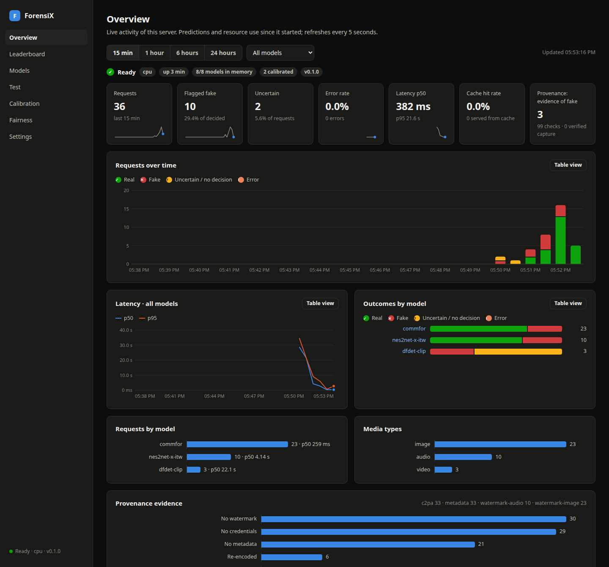
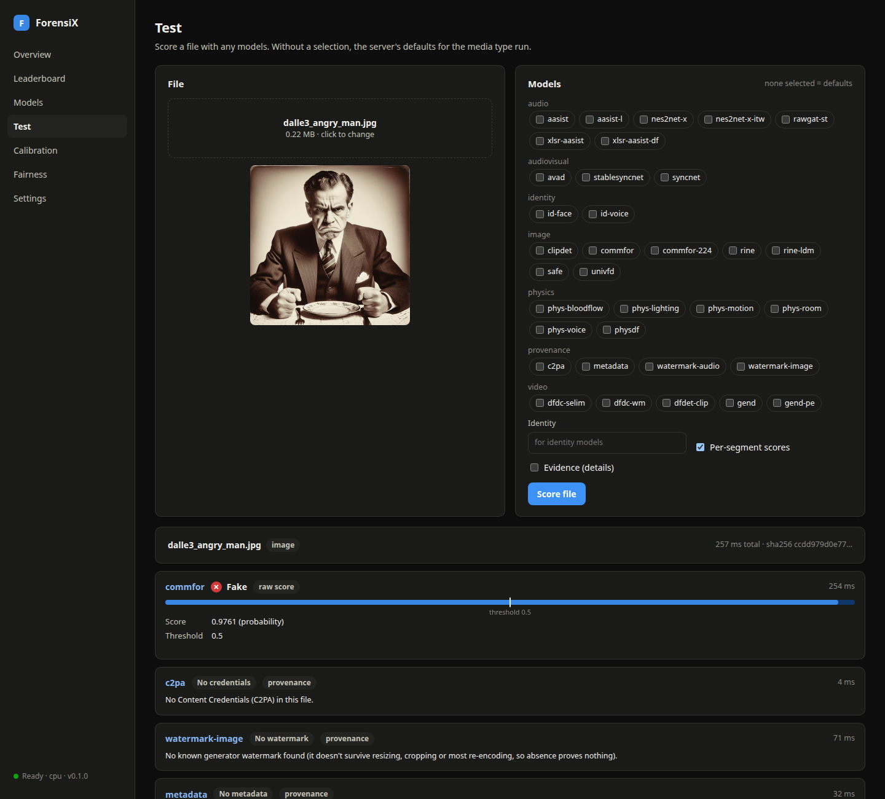
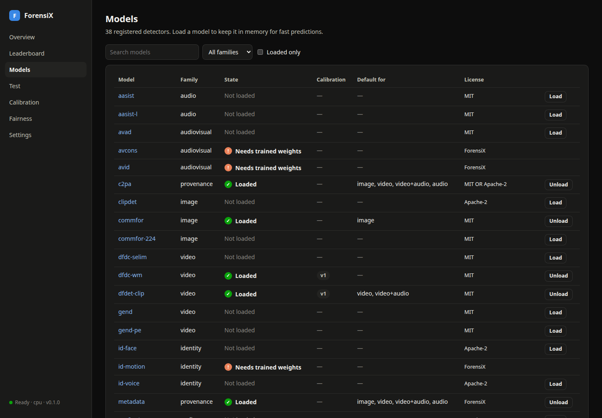
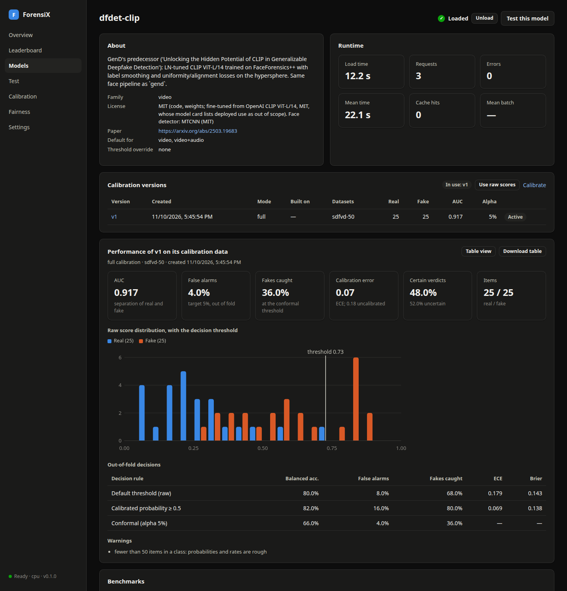
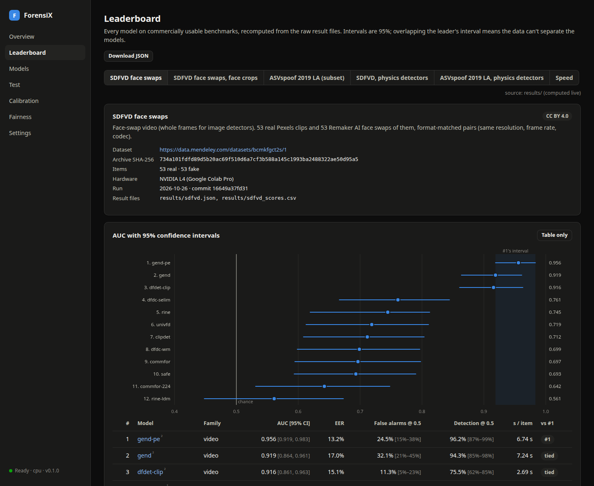
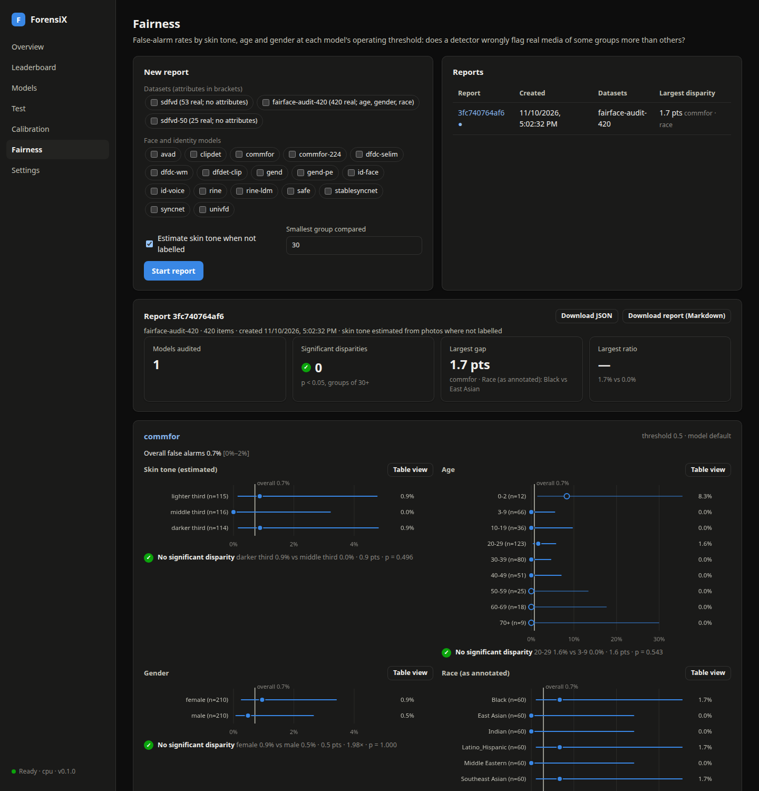

Quickstart¶
This page takes you from a fresh checkout to scoring files in Python, over HTTP and in the web manager, in about ten minutes. Each step links to the page that covers it in depth.
No install: try it in Google Colab

The get-started notebook runs everything on this page on a free Colab GPU, with sample media: detecting images, audio and video, provenance checks, uploading your own files, calibration, evaluation, the web manager inside Colab, and a fairness report.
1. Install¶
You need Python 3.10 or newer and ffmpeg (Installation has the details and GPU notes).
git clone https://github.com/anas-rz/ForensiX.git
cd ForensiX
pip install -e ".[server]" # the library, the HTTP server and the provenance checks
Model weights download on first use into ~/.cache/forensix/ and are checked against a SHA-256
hash. To fetch them ahead of time, for example before going offline, run
python scripts/download_weights.py.
2. Score a file in Python¶
import forensix
forensix.list_models("image") # ['clipdet', 'commfor', 'commfor-224', 'rine', ...]
detector = forensix.load("commfor") # device="cuda" on a GPU
pred = detector.predict("photo.jpg")
pred.fake_prob, pred.label # (0.98, 'fake')
Every detector, whether for audio, images, video, lip sync, physics or identity, returns the same
Prediction. Choosing detectors
explains which detector catches which manipulation, and
Interpreting scores explains what a score means.
Provenance checks read the evidence the file itself carries: Content Credentials, generator watermarks and metadata.
report = forensix.provenance.check("photo.jpg")
report["verdict"], report["summary"] # ('no_decisive_evidence', 'No decisive provenance evidence (most files carry none; ...)')
3. Run the server¶
The first start downloads the preloaded models. Once it logs Uvicorn running on
http://0.0.0.0:8000, the models are in memory and requests pay only for inference:
curl -F file=@photo.jpg http://localhost:8000/v1/detect
curl -F file=@clip.mp4 -F models=dfdet-clip,syncnet http://localhost:8000/v1/detect
Without models, the server picks the defaults for the media type: a detector plus the provenance
checks. Before exposing the server, set an API key (--api-key, or api_key and admin_key in a
config file). HTTP server covers the endpoints, configuration, batching and security.
The interactive OpenAPI docs are at http://localhost:8000/docs.
For a repeatable setup, put the options in a JSON config. A calibration_dir keeps uploaded
datasets, calibrations and fairness reports across restarts:
{
"device": "cuda",
"preload": ["commfor", "dfdet-clip", "nes2net-x-itw", "syncnet"],
"calibration_dir": "/data/forensix/calibration",
"api_key": "change-me",
"admin_key": "change-me-too"
}
4. Use the web manager¶
Open http://localhost:8000/ui/. It's served by the same process and calls the same API, so anything you do there can be scripted. If you set keys, enter them under Settings first.
Overview is a live dashboard of the instance: requests, verdicts, latency, cache hits and resource use, for all models or one.

Test: drop in an image, video or audio file and pick models, or use the defaults. Each model shows its score against its threshold, and the provenance checks show what the file itself proves.

Models lists every registered detector: whether it's loaded, its license and its calibration. Load or unload models from here, and open one to see its versions and performance.

Calibration: upload a labelled dataset as a ZIP (real/ and fake/ folders, or a
manifest.csv) and calibrate models on it. You get calibrated probabilities, a threshold for a
target false-alarm rate, and confidence verdicts on every prediction. Calibration
explains the dataset format and the full, incremental and refit modes.

Leaderboard: every model on commercially usable benchmarks, with 95% confidence intervals.

Fairness: false-alarm rates by skin tone, age and gender for face and identity models (Fairness reports).

5. Run it in a container¶
docker compose up -d --build # server and web manager on port 8000
kubectl apply -k deploy/kubernetes/overlays/cpu # or overlays/gpu
Docker, Kubernetes and cloud covers images, GPUs, persistence and autoscaling, and Deployment at scale covers running ForensiX over large volumes of media.
Next steps¶
- Recipes: working code for common tasks, such as checking a talking-head video across modalities, finding the fake part of a long recording, or choosing a threshold.
- Evaluating on your data: measure detectors on your own media before you trust them.
- Licensing and compliance: what the bundled licenses allow.
Building these docs¶
The documentation is a MkDocs site with the Material theme: